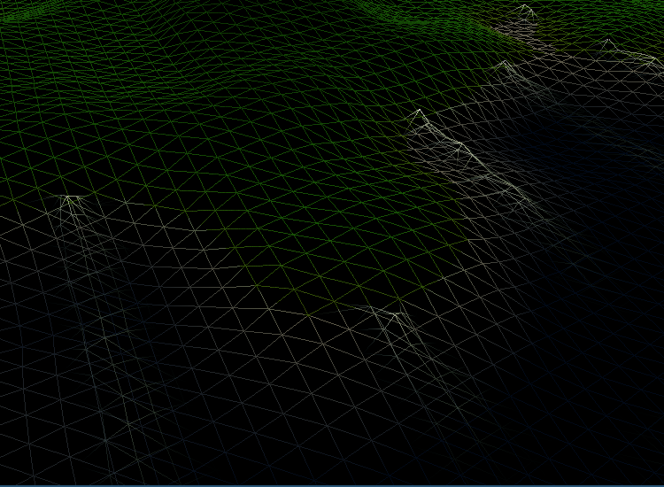

Welcome to the Terrain Rendering Series, a series in which we will explore techniques for rendering terrains with OpenGL. As this is the first article in the series, we will start with the most basic stuff, and later on explore more advanced topics.
This series is not intended for the beginning OpenGL programmer, as reading it requires you to be familiar with a lot of concepts. So, if your OpenGL skills are a bit rusty, you are recommended to read some of the basic tutorials first: Shaders, Textures, Camera, Basic Lighting, as well as some of the more advanced topics: Depth testing, Blending, Face Culling, Cube maps.
You are also highly recommended to be familiar with indexed drawing. Landscape rendering can be combined with deferred rendering for some really interesting post-processing techniques. But this will not be explored in this tutorial series.
The most basic technique for rendering 3d terrain is without doubt using what is called a height map (sometimes referred to as a height field). In this technique we define a grid of points, where each point is attributed a height value. If we position this grid horizontally in our 3d world, at height h, and calculate an offset for each grid point by using its height value, we can create 3d terrain. An example of this technique in use can be seen below:
In the images above we actually have 2 height maps, one for the terrain and one for the water surface. The water surface is rendered using a simple wave generator, which we will explore in a later tutorial. To the right, wireframed drawing mode is temporarily enabled to show the underlying terrain mesh.
class HeightValue
{
public:
Glfloat Height;
enum TerrainType Terrain;
};
const int HEIGHT_MAP_SIZE = 32;
HeightValue heightMap[HEIGHT_MAP_SIZE];
Here we specify the data type for each data point in the height map. We could easily just define the height map as an array of floats, but by using a class as here we can use any set of values for each height point, such assigning the terrain type (water, grass, dirt, rock, etc.), biome information, information on how to do texture blending, data for generating foliage, or even create functions for extracting values based on external parameters. This will prove very useful later on when we wish to populate our height map with landscape textures, trees, foliage, animals, etc. Now we just need to figure out how to pass this information on to OpenGL in a useful way. Since OpenGL is a rasterization pipeline based on triangles, we need to convert our height field into a triangle mesh such that we can render it, not as individual data points but as a contiguous segment of land. Thus, we need a method for constructing triangles from the height map as seen below:

To the left we see the abstract representation of our height field, where each point is a single height point. What we wish to obtain is the image on the right, where a triangle grid is formed as to connect each grid point into a mesh. We say about the grid that it is “discrete uniform grid”, meaning that the distance between each grid point is the same and since each grid point (x,y) is defined as non-negative integer coordinates.
There is a bit of math involved in this process, though it is not too complicated. First, we need to create a data structure for containing the triangles. As demonstrated in earlier tutorials, indexed rendering can be used for 3d objects where many triangles share corners, such as to minimize GPU memory usage. It’s quite easy to tell OpenGL to read vertices from a buffer 3 at a time and connect them together as a triangle (this step is called the ‘primitive assembly’), so we need to create an array and then add the indices for each triangle corner, in a sequential order.
Given a height field of size N * M (where N can be the same as M), the number of triangles T in the mesh is computed as
\[T = (N – 1) \cdot (M – 1) \cdot 2\]And the number of indices I is
\[I = T \cdot 3\]The code for generating the triangle indices looks, then, as following:
// TODO: Fill vertex array with height positions
std::vector<glm::vec3> vertices;
vertices.reserve(N * M);
for (int y = 0; y < N; y++) {
for (int x = 0; x < M; x++) {
GLuint index = y*N + x;
vertices.push_back(glm::vec3(x, y, heightMap[index].Height));
}
}
GLuint T = (N-1) * (M-1) * 2;
GLuint I = T * 3;
std::vector<GLuint> indices;
indices.reserve(I);
for (int y = 0; y < N-1; y++) {
for (int x = 0; x < M-1; x++) {
// upper-left triangle
GLuint topLeft = y*N + x;
indices.push_back(topLeft);
indices.push_back(topLeft + 1);
indices.push_back(topLeft + M);
// lower-right triangle
indices.push_back(topLeft + 1);
indices.push_back(topLeft + 1 + M);
indices.push_back(topLeft + M);
}
}
We now have the triangle indices, in correct order, for our mesh. The only thing remaining is to set the attribute pointers, and send them to the GPU:
GLuint VAO, VBO, EBO;
glGenVertexArrays(1, &VAO);
glGenBuffers(1, &VBO);
glGenBuffers(1, &EBO);
glBindVertexArray(VAO);
glBindBuffer(GL_ARRAY_BUFFER, VBO);
glBufferData(GL_ARRAY_BUFFER, sizeof(vertices) * N * M,
vertices.data(), GL_STATIC_DRAW);
glBindBuffer(GL_ELEMENT_ARRAY_BUFFER, EBO);
glBufferData(GL_ELEMENT_ARRAY_BUFFER, sizeof(GLuint) * I,
indices.data(), GL_STATIC_DRAW);
// attribute pointer - vertex position
glVertexAttribPointer(0, 3, GL_FLOAT, GL_FALSE, sizeof(glm::vec3),
(GLvoid*)0);
glEnableVertexAttribArray(0);
glBindVertexArray(0);
And when we wish to render the surface mesh:
glBindVertexArray(VAO);
glDrawElements(GL_TRIANGLES, I, GL_UNSIGNED_INT, 0);
glBindVertexArray(0);